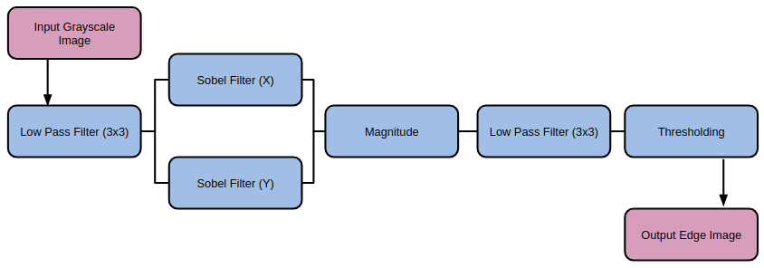
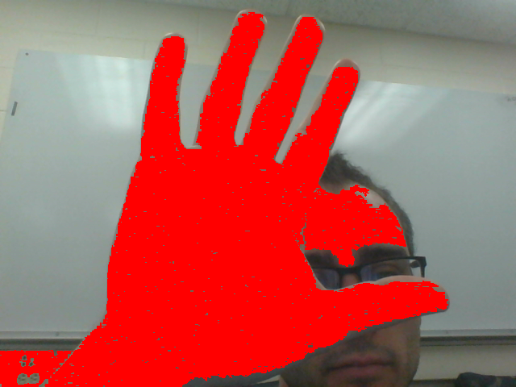
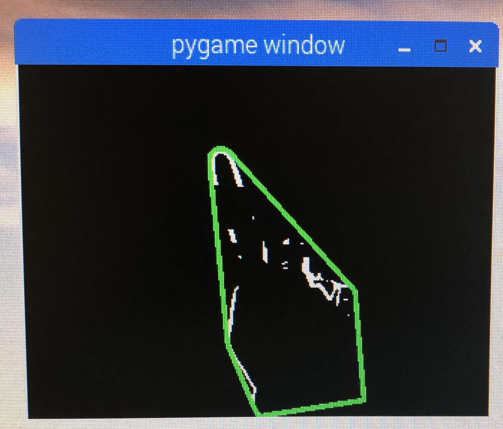

Gesture Controlled Mouse
Paolo Arguelles (pa394@cornell.edu)
Mike DiDomenico (md848@cornell.edu)
ECE 5725: Design with Embedded Operating Systems
School of Electrical and Computer Engineering
Cornell University
Project GitHub Repository
Demonstration
Introduction
Previous projects that have implemented a gesture-based interface use smart gloves and colored tape to make the fingers easier to track. We wanted to be able to realize gesture based control simply, and in the most organic way possible.
For us, this meant tracking the actual hand with no additional hardware. We wanted a similar kind of user experience as the Leap Motion Controller, the current industry standard in gesture control. One way in which our system differs from the Leap Motion Controller is that none of the intensive processing is done on the actual device; rather it is consigned to a computer whose minimum specifications are consistent with the performace of an Intel I3 processor.
We wanted to do all the processing in situ. We used the simplest setup we could think of - just a single Raspberry Pi and camera module - and saw where that took us. We added a PiTFT to act as a convenient user interface, and to demonstrate the computational abiity of the Raspberry Pi by showing the output of the realtime image processing.
We also wanted to leverage the Bluetooth capability of the Raspberry Pi. Our project tricks a host computer into thinking that the Raspberry Pi is a Bluetooth mouse. Using this scheme, the mouse on any Bluetooth-enabled desktop computer or laptop can be controlled using hand movements.
Towards a more organic setup, we wanted to do minimize background control. A simple solution to avoid having to process a noisy background is to point the camera upwards. Weand the image of the blank ceiling is stored, and removed from all of the successive frames. Each frame is processed to detect the hand, and which of two gestures that the user is making. The motion of the hand, and the gestures are analyzed to send Bluetooth mouse commands to a remote machine.

Project Objectives
- Identify the user’s hand in front of a static background
- Determine if the user is making one of two gestures
- Emulate a Bluetooth mouse
- Use information about a user’s hand to send commands to control the mouse of another device, for example, moving the hand would move the mouse, and a certain gesture would map to a mouse click.
Design Process and Testing
When starting the project, we experimented with OpenCV on both our laptops and on the Raspberry Pi. We began on the Pi by simply reading frames from the PiCam.
#Import required libraries for PiCamera from picamera.array import PiRGBArray from picamera import PiCamera #Initialize Picam, turn off automatic exposure adjustments camera = PiCamera() camera.resolution = (160*resScale, 120*resScale) camera.framerate = 30 camera.exposure_mode = 'off' rawCapture = PiRGBArray(camera, size=(160*resScale, 120*resScale)) #Capture frames from PiCamera for frame in camera.capture_continuous(rawCapture, format="bgr", use_video_port=True): #MAIN CODE GOES IN FOR LOOP# cap.release()
Image Processing Methods
We started the process of mapping hand movements to mouse gestures by first attempting to identify a hand in an arbitrary environment. This task was much more difficult than we had expected, and eventually we constrained ourselves to identifying the user’s hand in front of a static background. However, we first explored a number of options for hand identification. We started by exploring various edge detection operations, finding the most success with the Sobel operator. We also explored the Laplacian operator, but found it produced significantly more noise.
We used OpenCV to find edges in the input image, with the OpenCV Sobel() function and a kernel size of 1, in each orientation. We then used the magnitude of the gradient in both orientations to generate a simple edge image. After exploring other operations before and after applying the Sobel operation, we found the best results by applying the following sequence of operations.

With Sobel edge detection, we had an effective method of finding the outline of a hand, but still no method of finding the hand itself. After doing some research, we attempted using color to identify a user’s hand. To do this, we set a button which, when pressed, would use a simple region growing method with two thresholds to identify the region at the center of the image. To use this method, the user would position their hand in the center of the screen, then press the button. Starting at the center of the image, the algorithm would check each neighbor, and ensure that the pixel intensities were within a small threshold to their neighbor and within a large threshold to the original, center pixel. This method worked reasonably well, and by averaging the region found with the region growing algorithm, we could find a good estimate for the user’s skin color. However, this introduced a new problem which we had suspected that we would encounter. The user’s face would often interfere with this method, which encouraged us to look at other techniques.

We attempted to use a similar algorithm, but one which used edges generated not from a grayscale image, but from each of the hue, saturation, and value representation of the image. The idea behind this strategy was that hue segmentation/edges would separate the user from the background, and that saturation/value would separate the hand from the face, since the lighting was slightly different on each part of the body. While this seemed promising at first, it was unreliable in different lighting, and had highly variable performance.
Our last attempt to distinguish a user’s hand from an arbitrary background was using depth detection, under the assumption that in general, the user’s hand would be closer to the camera than any other objects in the frame. We used a variety of techniques included in OpenCV, but found quickly that it was very difficult to align two cameras to act as a stereo camera, as we had planned. In the end, we found that there was too much noise in our camera setup to validate depth detection, and we decided to change our approach.
After researching the Leap Motion Controller, a product similar to the system we were trying to produce, we decide to try putting the camera below the user’s hand facing up, instead of in front of the user facing them. Our edge detection algorithm worked well in this situation, especially since the ceiling was unchanging compared to when the background had included more of the user than their hand. To solve the issue of edges included in the background, we used background subtraction. On startup, our system would record a frame of the background without the user in it. It would then compute an edge image in the same way as described above, and would subtract that image from each new edge image generated from frame captures from the camera. This removed almost all edge artifacts from the background. With this setup we were able to identify the edges of the user’s hand and arm.
Tracking Hand Movement
To track the movement of the hand, we computed the center of mass of the edge image (cx,cy) using OpenCV moment calculations:M = cv2.moments(frame) if M['m00'] != 0: cx = int(M['m10']/M['m00']) cy = int(M['m01']/M['m00'])
Since we had a method of tracking the user’s hand and of identifying the edges of the hand, we started researching gesture detection. Many of the methods that we saw used a combination of a convex hull around the hand edges, and the defects in that convex hull. Using the OpenCV {convexHull} function, we found the convex hull of the edge image, as well as the defects with {convexityDefects}. We explored the possibility of using the convexity defects, but discovered that they were not as reliable as the hull, and some defects would appear and disappear with noise. However, we expected that we would be able to detect some simple gestures with only the convex hull of the hand.
Gesture Classification by Polygon Matching
After applying the necessary image processing algorithms to yield a clear outline of the hand in image "frame," we used OpenCV to obtain the contours of the image:f = np.zeros((frame.shape[0],frame.shape[1],3),original.dtype) f[:,:,0] = frame f[:,:,1] = frame f[:,:,2] = frame _,contours,h = cv2.findContours(frame, cv2.RETR_TREE, cv2.CHAIN_APPROX_SIMPLE)
cnts = np.vstack([contours[i] for i in range(len(contours))]) hull = cv2.convexHull(cnts) defectHull = cv2.convexHull(cnts,returnPoints=False) defects = cv2.convexityDefects(cnts, defectHull) f = cv2.drawContours(f, [hull], 0, hullColor, 5)
Considering the needs of this project, we would only need to distinguish between two gesture states: one mapped to a "mouse button up" state, the other mapped to a "mouse button down" or "click initiate" state. While other gesture recognition projects would need to obtain the "convex hull defects" in order to locate the valleys between the fingers, we found that this can be avoided by working with gestures different enough that their uniqueness may be characterized by their convex hull alone. Skipping the standard "convex hull defects" step would also cut down on processing time, a much needed resource for real time applications such as this. We decided to map a "point" gesture to a "mouse down" operation. All other gestures would map to a "mouse up" state. Polygon matching is performed in OpenCV by:
matches = cv2.matchShapes(hull,matchContour[1],cv2.CONTOURS_MATCH_I2,0)
When
matches is printed, the console outputs a floating point number characterizing the similarity of the two polygons. Numbers closer to 0 indicate increasing similarity.
We found that our system performs best when moving the mouse with an open hand gesture, and clicking by pointing the index finger. These two gestures are far enough apart form each other that their convex hulls (characterized by a heptagon and triangle, respectively) can robustly identify each gesture state.

Convex hull bounding a "move mouse" gesture
Emulating A Mouse Over Bluetooth
Once we settled on a gesture identification method, we moved on to implementing Bluetooth mouse emulation. We did so by building on a GitHub project , and by consulting a number of references (We found support for emulating a Bluetooth keyboard, but much less for mouse emulation). After some research, we set up a Bluetooth mouse emulation server using DBus, which would allow another Python script or other entity to set mouse button press information and relative horizontal and vertical movement. We added these calls to the code which managed the PiCamera image processing, and were able to control the mouse of a different device by moving a hand in from of the PiCam.In order to smooth out the movement of the mouse over Bluetooth, we used a temporal filter. We implemented this by creating a list of mouse states. Every time the user’s hand moved, the relative motion was added to the list, as well as whether or not the gesture was a mouse click. The average of these values was used as the as the input to the Bluetooth socket. The resulting behavior was a slight delay, since behavior from previous frames influenced the action taken on the current frame. However, the mouse movement was smoother in general, since it was slightly denoised. Additionally, the delay introduced was not a real time delay, but the result of using a low pass filter on values which have already happened.
Optimizing OpenCV
The way in which we filtered the image, detected the gesture, and emulated the mouse did not leave much room for concurrency or parallelization, which means that using multithreading and multiprocessing modules would not have led to that much speedup. We were looking for rapid execution of sequential OpenCV operations. To achieve this, as per a 2017 article by Adrian Rosebrock, an optimized version of OpenCV was installed. Simply put, the optimized version of OpenCV runs faster by taking advantage of the ARM NEON architecture (an optimization extension for ARM processors designed to faster image processing), and VFPV3 (a floating point optimization). Both of these capabilities are built into the Raspberry Pi.The procedure for installing this optimized version of OpenCV is virtually identical to that of installing the regular version; any tutorial describing the process can be followed. The only change occurs at the
cmake command:
$ cd ~/opencv-3.3.0/ $ mkdir build $ cd build $ cmake -D CMAKE_BUILD_TYPE=RELEASE \ -D CMAKE_INSTALL_PREFIX=/usr/local \ -D OPENCV_EXTRA_MODULES_PATH=~/opencv_contrib-3.3.0/modules \ -D ENABLE_NEON=ON \ -D ENABLE_VFPV3=ON \ -D BUILD_TESTS=OFF \ -D INSTALL_PYTHON_EXAMPLES=OFF \ -D BUILD_EXAMPLES=OFF ..
ENABLE_NEON and ENABLE_VFPV3 flags are flipped on.
Implementation
Our final demonstration system was implemented with a Raspberry Pi, PiCam, and PiTFT. When the user powers on the system, the applications starts immediately, and performs background subtraction to compensate for whatever background it is facing.

SET CLICK GESTURE (BUTTON 22)
- The user can press button 22 on the PiTFT to designate a gesture as the "click" or "mouse down" state. Once set, the convex hull will turn green to indicate that a click state has been detected.

The convex hull turns green upon click gesture detection
RESET BACKGROUND SUBTRACTION (BUTTON 23)
- If the camera placement has been perturbed since program start, the image on the PiTFT may show residual edges consistent with the background. Pressing button 23 on the PiTFT will reset the background image based on the new camera placement. Users should take care not to let any part of their body enter the frame as the new background is recorded.
HOLD CURSOR (BUTTON 17)
- If the user decides to momentarily transfer control of their mouse back to the trackpad (and temporarily disengage the mouse emulation activity from the Raspberry Pi), we have implemented button 17 as a "hold" button. Pressing this button once toggles a "hold" state, which will allow the user to control their computer normally. Pressing the button again brings the system out of its "held" state. It should be noted that the system still operates normally while in its hold state; all the mouse emulation activities are simply overidden as if no motion is being detected.
BAILOUT (BUTTON 27)
- The script will exit upon button press.
Results
The scope of our project changed, gradually but drastically, over the course of the project. The primary shift occurred when we changed the direction of the camera. At that point in the project, we decided to use a static background (the ceiling), instead of a variable background containing the user’s face. This decision was largely made because it made it much easier to distinguish the user’s hand from the background each image frame. It also meant that we could move forward with other methods of hand tracking and identification, other than using the depth of the hand. Because of this change, we did not meet our initial goal of tracking the hand in a dynamic environment, but still met the goal of hand tracking. We also met our goal of simple gesture detection. We are able to detect whether the user is making one of two gestures. Our project was successful in meeting our outlined objectives, and running at a reasonable speed.
The main performance issue we encountered (throughout the project) was image noise. We found it somewhat difficult to denoise the image spatially, but had some success. Toward the end of the project, when we had built a working system, we had difficulty with temporal noise. Small changes from one frame to another could cause large mouse movements, as well as “phantom” clicking or unclicking. It was not possible to implement any normal filtering operations, since they would have introduced delay into system, would have diminished the user experience. We attempted to use temporal filtering with some success, but with some delay. This problem resulting in a user interface that was not as smooth as we would have hoped.
Conclusions
What Worked Well
Sobel and Mean Filtering
We found Sobel and mean filtering to be a simple and minimally calculation intensive method to extract the contours of the hand.Upward Camera Placement
When we decided to orient the camera upwards, we needed a way to remove edges in the background from the image. We did so by capture a frame on startup, and subtracting the edge image of that frame from every subsequent image. This method of background subtraction sometimes removed edges of the hand that were overlaid on edges of the background, but worked well for our purposes. After experimenting with different hand tracking methods, we found that tracking the center of mass of the edge image worked well enough for controlling mouse movement; only later did we have some problems when we introduced clicking.
Upward camera placement resulted in easier background removal
Gesture Classification with Polygon Matching
Our shape matching gesture detection system worked well after we had constrained ourselves to certain gestures.Mouse Emulation Over Bluetooth
We built a bluetooth mouse emulation service on a GitHub project that emulated a Bluetooth keyboard. This project ran a DBus server, and when the user input a keystroke, it would forward that keystroke over Bluetooth. We changed this project so that instead of emulating a keyboard, the software emulated a mouse, which was more involved than we expected, since it was somewhat challenging to find the documentation for HID control codes. We got this project working as a mouse emulation server, which any python script could send commands to, which made it easy to incorporate into our project.What Didn't Work
Region Growing and Color-Based Segmentation
At the start of the project, we experimented with a number of different methods to detect the user’s hand. We initially tried to generate an edge image from the original frame, using different edge operators, filters, and thresholds. We varied many parameters and techniques, and eventually were able to create an edge image of only the significant edges in the image. However, this did not help us with hand detection, and so we next attempted to use the skin color of the user to segment the hand. We began by using a calibration algorithm were the user would place their hand in the center of the screen, and press a button. The algorithm would use region growing with thresholding to scan until it found colors that were significantly different from neighbors or where it started. This technique had a number of issues; the thresholds were very dependent on the specifics of the situation, including the lighting, background, and user. We approaching the same issue using edge images, and generated edge images in different ways, including using HSV segmentation, with different thresholds instead of RGB. However, we found that because of noise and variable environments, we could not find a process that worked reliable to identify the hand.Depth Channel Generation Using Stereo Camera Setup
We next tried to use depth detection to identify the hand, since the hand was likely to be the closest object to the camera. Without a stereo camera, we attempted to use two cameras side by side, but between aligning them physically and the differences in noise, we were unable to create a usable depth image using the tools built in to OpenCV.Future Work
More Precise Gesture Control
An issue we encountered late in the project was creating smooth mouse motion. We found that using center of mass detection worked well for mouse motion, but could cause abrupt mouse movement when the user changed gestures, since the shape of the object of interest (the hand/arm) would change with the gesture. We implemented a system to ignore movement while the gesture was changing, however, the detection of a gesture change and movement of the center of mass did not always align. We also wanted to determine a method for tracking the hand and ignoring the arm, but were unable to determine an appropriate method to distinguish the arm from the hand.Camera with Wider Field-of-View
The ideal placement for this device is on the same level as your laptop. Using the PiCamera module, the mouse could not be fully moved across the laptop screen because the field-of-view of the camera was too narrow. The device had to be placed several inches below the base of the laptop in order for it to work comfortably. This kind of application would benefit from a camera with a much wider FOV.Work Distribution
Paolo
pa394@cornell.edu
Paolo compiled and implemented an optimized version of OpenCV to achieve an estimated ~30% speedup and worked with Mike to debug some SYMLINK problems as a result of the compilation. He incorporated absolute mouse tracking emulation on Raspbian usingxdotool, and wrote a Python script using PyGame to demonstrate centroid tracking to move an on-screen sprite. He worked with Mike to display the filtered image and hull on the PiTFT external display, and wrote code to map background subtraction, mouse hold, click gesture set, and bailout functionality on the PiTFT's four buttons. He also investigated potential for GPU speedup, reassigning some blurring operations to take place on the PiCam to hardware to reduce code runtime. Before we had finalized our hardware to a single PiCam, Paolo wrote code to interface two USB cameras with the Raspberry Pi and OpenCV, and worked with Mike to attempt to implement a stereo camera setup, an approach we ended up scrapping in favor of a single camera setup.
Mike
md848@cornell.edu
Mike started working on this project by experimenting with different edge detection methods. Mike explored different filters and techniques, as well as different parameters and thresholds. Mike also experimented with many different variations of hand detection algorithms, including calibration to the skin color of the user using region growing, and generating edge images with HSV format images instead of RGB format images. Mike also wrote some code, and worked with Paolo on different depth detection methods. Mike implemented center of mass object tracking, and worked with Paolo to develop a good method of background subtraction. Paolo and Mike worked together to build and compile the optimized OpenCV library, and Mike modified the Bluetooth keyboard emulation project to instead emulate a Bluetooth mouse with commands sent from an external Python script.
Bill of Materials
- Raspberry Pi $35.00
- Raspberry Pi Camera Module V2 $25.00
- Adafruit PiTFT $35.00
Total: $95.00
References
PiCamera DocumentOpenCV Sobel Filtering Documentation
Keyboard Emulation GitHub Project
OpenCV Optimization
Code Appendix
start.sh
#Stop the background process sudo /etc/init.d/bluetooth stop # Turn on Bluetooth sudo hciconfig hcio up # Update mac address #./updateMac.sh #Update Name #./updateName.sh RPi_Mouse #Get current Path export C_PATH=$(pwd) #Create Tmux session tmux has-session -t mlabviet if [ $? != 0 ]; then echo "starting tmux commands" tmux new-session -s mlabviet -n os -d tmux split-window -v -t mlabviet:os.0 tmux split-window -v -t mlabviet:os.1 tmux send-keys -t mlabviet:os.0 'cd $C_PATH && sudo /usr/sbin/bluetoothd --nodetach --debug -p time ' C-m tmux send-keys -t mlabviet:os.1 'cd $C_PATH/server && sudo python btk_mouse.py ' C-m tmux send-keys -t mlabviet:os.2 'cd $C_PATH && sudo /usr/bin/bluetoothctl' C-m echo "tmux done" fi
gestureDetection.py
# source: # https://opencv-python-tutroals.readthedocs.io/en/latest/py_tutorials/py_gui/py_video_display/py_video_display.html # import the necessary packages from picamera.array import PiRGBArray from picamera import PiCamera import RPi.GPIO as GPIO import time import cv2 import numpy as np import math import os # for OS calls import pygame # Import pygame graphics library import dbus import dbus.service import dbus.mainloop.glib resScale = 1 postthreshold = 200 matchThreshold = 2 cxp = 0 cyp = 0 # setup pygame drivers and screen if True: os.putenv('SDL_VIDEODRIVER', 'fbcon') # Display on piTFT os.putenv('SDL_FBDEV', '/dev/fb1') #os.putenv('SDL_MOUSEDRV', 'TSLIB') # Track mouse clicks on piTFT #os.putenv('SDL_MOUSEDEV', '/dev/input/touchscreen') # initialize the camera and grab a reference to the raw camera capture camera = PiCamera() camera.resolution = (160*resScale, 120*resScale) camera.framerate = 30 camera.exposure_mode = 'off' rawCapture = PiRGBArray(camera, size=(160*resScale, 120*resScale)) # allow the camera to warmup time.sleep(0.1) key = None bg = None portFcn = [0, 0, 0] mouseEm = np.asarray([0, 0, 0]) prevMouseEm = np.asarray([0, 0, 0]) frameCount = 0 thrs = 0.09 et = 0 bus = dbus.SystemBus() btkservice = bus.get_object('org.yaptb.btkbservice','/org/yaptb/btkbservice') dev = dbus.Interface(btkservice,'org.yaptb.btkbservice') time.sleep(2) def to_binary(i): if i >= 0: if i > 127: i = 127 i = i & 0xFF else: if i < -127: i = -127 i = abs(i) & 0xFF i = ~i + 1 i = i & 0xFF return i def send_move(dev, buttons, x, y): x = to_binary(int(x)) y = to_binary(int(y)) wheel = 0 dev.send_array(0,[0xA1,0x01, buttons, x, y, wheel, 0x00, 0x00]) def send_state(dev, buttons, x, y): while abs(x) > 127 or abs(y) > 127: if abs(x) > 127: x -= x/abs(x) * 127 if abs(y) > 127: y -= y/abs(y) * 127 send_move(dev,buttons,x,y) send_move(dev,buttons,x,y) def GPIO17_callback(channel): portFcn[0] = not portFcn[0] print("HOLD CURSOR") def GPIO22_callback(channel): portFcn[1] = 1 print("SET CLICK GESTURE") def GPIO23_callback(channel): portFcn[2] = 1 def GPIO27_callback(channel): print("QUITTING PROGRAM") exit() # INITIALIZE GPIO GPIO.setmode(GPIO.BCM) pull_up_ports = [17,22,23,27] quit_port = 27 for port in pull_up_ports: GPIO.setup(port, GPIO.IN,pull_up_down=GPIO.PUD_UP) GPIO.add_event_detect(17, GPIO.FALLING, callback=GPIO17_callback, bouncetime=300) GPIO.add_event_detect(22, GPIO.FALLING, callback=GPIO22_callback, bouncetime=300) GPIO.add_event_detect(23, GPIO.FALLING, callback=GPIO23_callback, bouncetime=300) GPIO.add_event_detect(27, GPIO.FALLING, callback=GPIO27_callback, bouncetime=300) # INITIALIZE PYGAME STUFF pygame.init() clock = pygame.time.Clock() size = width, height = 320,240 black = 0,0,0 screen = pygame.display.set_mode(size, pygame.HWSURFACE) startTime = time.time() pygame.mouse.set_visible( False ) def edges(frame, thresh): sobelx = cv2.Sobel(frame, cv2.CV_32F, 1, 0, ksize=1) sobely = cv2.Sobel(frame, cv2.CV_32F, 0, 1, ksize=1) mag = np.power(np.power(sobelx,2) + np.power(sobely,2),1/2) # processing on edge image frame = cv2.blur(mag,(3,3)) #frame = cv2.medianBlur(frame5) # thresholding mm = (np.amax(frame) * thresh) frame = (mm < frame) frame = np.float32(frame) return frame def center_of_mass(img): h = img.shape[0] w = img.shape[1] mx = np.amax(img) mn = np.amin(img) yc = 0 xc = 0 total = 0 for y in range(h): for x in range(w): v = img[y,x] if v > 0: yc += y xc += x total += 1 if total == 0: yy = 0 xx = 0 else: yy = int(yc/total) xx = int(xc/total) return yy,xx bg = None matchContour = [None] * 10 nbg = 1 Start = 1 hullColor = (0,0,255) cx = 0 cy = 0 mouseL_len = 3 mouseL = np.asarray([[0,0,0]] * mouseL_len) for frame in camera.capture_continuous(rawCapture, format="bgr", use_video_port=True): wk = cv2.waitKey(1) frame = frame.array original = np.copy(frame) frame = cv2.blur(frame,(7,7)) # Our operations on the frame come here frame = cv2.cvtColor(frame, cv2.COLOR_BGR2GRAY) thrs = 0.09 frame = edges(frame, thrs) frame = (frame - np.amin(frame))/(np.amax(frame)-np.amin(frame)) frame[frame < 0.1] = 0 if Start: bg = frame nbg = 1 Start = 0 if portFcn[2]: bg = frame nbg = 1 print("BACKGROUND SUBTRACTED") portFcn[2] = 0 if wk & 0xFF == ord('n'): bg = frame/(nbg+1) + bg*nbg/(nbg+1) nbg += 1 if wk & 0xFF == ord('q'): break if type(bg) != type(None): frame = frame - bg et = 0.5 frame[frame < et] = 0 frame = frame * 255 frame = frame.astype(np.uint8) kernel = np.ones((3,3),np.uint8) kernel[0,0] = 0 kernel[0,2] = 0 kernel[2,0] = 0 kernel[2,2] = 0 frame = cv2.erode(frame,kernel, iterations=1) frame = cv2.blur(frame,(3,3)) frame[frame < postthreshold] = 0 f = np.zeros((frame.shape[0],frame.shape[1],3),original.dtype) f[:,:,0] = frame f[:,:,1] = frame f[:,:,2] = frame _,contours,h = cv2.findContours(frame, cv2.RETR_TREE, cv2.CHAIN_APPROX_SIMPLE) if len(contours) > 0: cnts = np.vstack([contours[i] for i in range(len(contours))]) hull = cv2.convexHull(cnts) defectHull = cv2.convexHull(cnts,returnPoints=False) defects = cv2.convexityDefects(cnts, defectHull) f = cv2.drawContours(f, [hull], 0, hullColor, 5) dists = [] if chr(wk & 0xFF) in '12': matchContour[int(chr(wk&0xFF))] = np.copy(hull) #if portFcn[0]: #matchContour[0] = np.copy(hull) #portFcn[0] = 0 if portFcn[1]: matchContour[1] = np.copy(hull) portFcn[1] = 0 if type(hull) != type(None): matches = cv2.matchShapes(hull,matchContour[1],cv2.CONTOURS_MATCH_I2,0) print(matches) prevMouseEm[0] = mouseEm[0] if matches < matchThreshold: print("DRAG") mouseEm[0] = 1 else: mouseEm[0] = 0 M = cv2.moments(frame) if M['m00'] != 0: cx = int(M['m10']/M['m00']) cy = int(M['m01']/M['m00']) # display frame f = cv2.resize(f, (160*4,120*4), fx=0, fy=0, interpolation = cv2.INTER_NEAREST) cv2.imwrite('tmp.jpg',f) f = pygame.image.load('tmp.jpg') f = pygame.transform.scale(f, (320, 240)) f = pygame.transform.flip(f,0,1) rawCapture.truncate(0) screen.blit(f, [0,0]) pygame.display.flip() if portFcn[0] == 1: continue #Check jump if abs(prevMouseEm[2]) > 100 or abs(prevMouseEm[1]) > 100 or prevMouseEm[0] != mouseEm[0] or len(contours) == 0: rx = 0 ry = 0 else: rx = cx - cxp ry = cy - cyp if abs(rx) > 100 or abs(ry) > 100: rx = 0 ry = 0 cxp = cx cyp = cy prevMouseEm[1] = mouseEm[1] prevMouseEm[2] = mouseEm[2] if rx != 0: #mouseEm[1] = abs(rx**2.5)*(rx/abs(rx)) mouseEm[1] = rx*15 else: mouseEm[1] = 0 if ry != 0: #mouseEm[2] = -abs(ry**2.5)*(ry/abs(ry)) mouseEm[2] = -ry*30 else: mouseEm[2] = 0 mouseL[1:,:] = mouseL[0:(mouseL_len-1),:] mouseL[0,:] = mouseEm[:] print(mouseL) mouseEm1 = np.mean(mouseL, axis=0).astype(np.int16) if len(np.unique(mouseL[:,0])) != 1: print('CLICKING') mouseEm1[1] = 0 mouseEm1[2] = 0 if int(mouseEm1[0]) == 1: hullColor = (0,255,0) else: hullColor = (0,0,255) # Send the compiled mouse emulation information over the Bluetooth link send_state(dev, mouseEm1[0], mouseEm1[1], mouseEm1[2]) # Release the capture cap.release() cv2.destroyAllWindows()